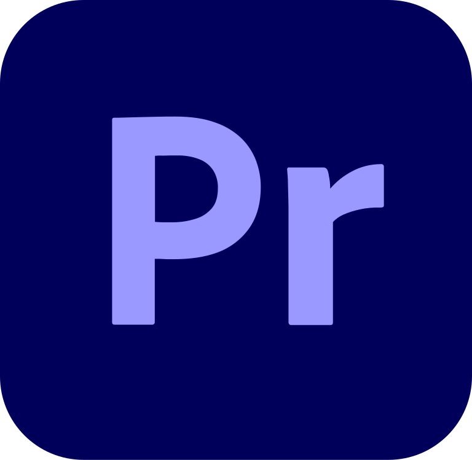

Tools yang Saya Gunakan



Saya adalah seorang kreator di bidang multimedia, teknologi, dan produksi event. Dengan keahlian lintas bidang, saya menggabungkan visual, audio, interaksi, dan desain untuk menciptakan pengalaman yang dinamis dan berdampak.
Dengan latar belakang di bidang desain visual, produksi media, dan teknologi multimedia, saya telah terlibat dalam berbagai proyek mulai dari broadcasting hingga event interaktif. Portofolio ini menampilkan karya-karya pilihan yang merepresentasikan proses, kreativitas, dan pengalaman saya.
Terlibat dalam produksi konser, seminar, dan acara gereja, mulai dari konten visual, pengelolaan audio, pencahayaan, hingga dukungan teknis secara menyeluruh.
Pembuatan logo, identitas visual, dan materi promosi yang kreatif serta konsisten, disesuaikan dengan kebutuhan dan karakter brand masing-masing klien.
Email: gilbertsimarmata0@gmail.com